Preliminary Exploration
COVID-19
Global Comparison
COVID19 %>%
filter(country.region %in% c("US", "China", "Korea, South", "Italy")) %>%
group_by(country.region, date) %>%
summarise(confirmed=sum(confirmed)) %>%
ggplot(aes(date, confirmed)) +
geom_line(aes(color=country.region)) +
scale_y_log10()+
theme_minimal()
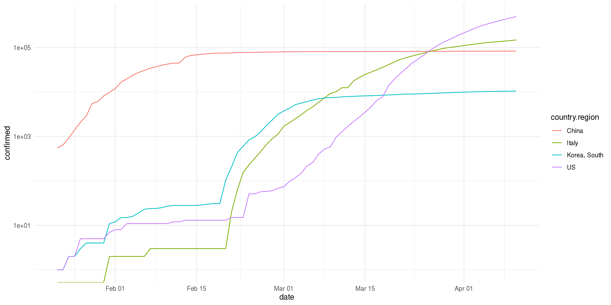 Log scale of coronavirus cases in China, Italy, South Korea and the United States. We can see that China and South Korea have long since plataued in new confirmed cases, while the US and Italy are still in the thick of it. Something very noteworthy is how cases in Italy and South Korea began rising at approximately the same date, yet South Korea has been able to control the situation much more effectively than Italy. Of course, there may be other factors involved. In any case, a lot of these numbers are beginning to taper off, which may be indicative of the effectiveness of social distancing.
Confirmed, Deaths, Recoveries
Global <-
COVID19 %>%
group_by(date) %>%
summarise(confirmed=sum(confirmed), deaths=sum(deaths), recovered=sum(recovered, na.rm=TRUE))
Global %>%
pivot_longer(cols=c(confirmed, deaths, recovered), names_to="type", values_to="count") %>%
ggplot(aes(date, count)) +
geom_line(aes(color=type)) +
scale_y_log10() +
theme_minimal()
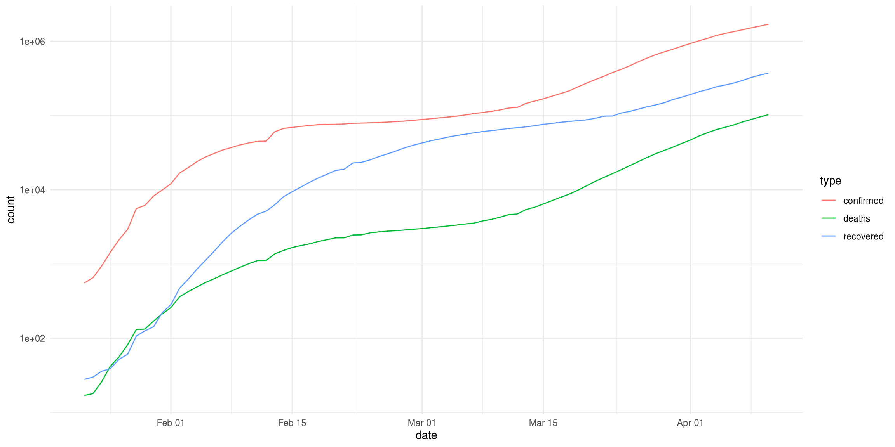
Log scale of confirmed cases and deaths from COVID-19 globally. We can see that they essentially follow the same trends, which makes sense. Recoveries actually seem to grow faster than deaths, which is expected but still heartening.
Brent Crude Oil
Brent %>%
ggplot(aes(date, close)) +
geom_line() +
geom_candlestick(aes(open=open, high=high, low=low, close=close)) +
theme_tq()
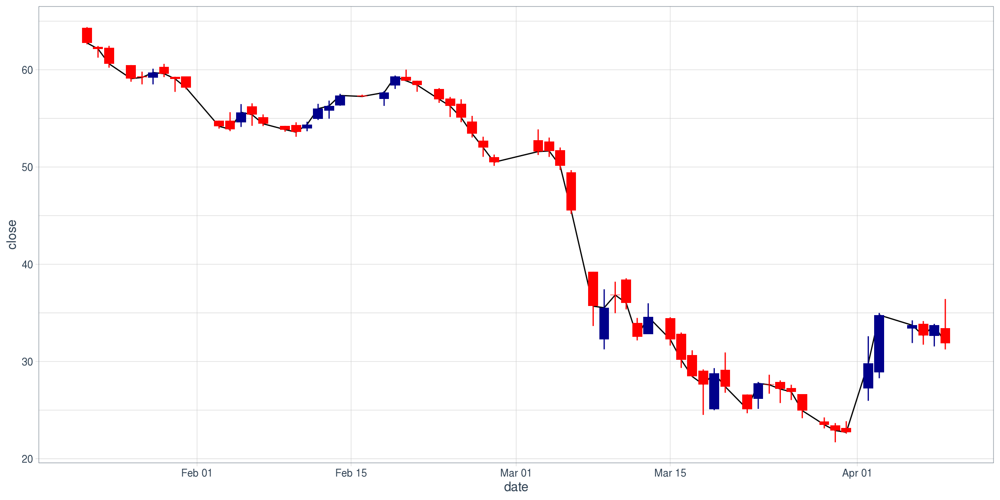
We can see that Brent crude oil futures prices tanked starting in January. I wonder what happened? Hmm.
Despite its hardships, it’s also begun to rebound well since the beginning of April.
One key thing to note about the price of Brent crude is the price war between Russia and OPEC that first started on March 6, when Russia refused to cut production in conjunction with Saudia Arabia because of a sharp fall in demand because of COVID-19 and stay-at-home procedures. An agreement between Saudi Arabia and Russia has since been reached, but it has helped very little with investor confidence, as we see Brent prices drop significantly close to April expiration.
Brent %>%
ggplot(aes(date, adjusted)) +
geom_line(color = "red") +
geom_point(color = "red") +
geom_vline(aes(xintercept=mdy("3-6-2020")), linetype=3) +
geom_vline(aes(xintercept=mdy("3-31-2020")), linetype=3) +
geom_vline(aes(xintercept=mdy("4-9-2020")), linetype=3) +
xlim(mdy("3-1-2020"), mdy("4-23-2020")) +
theme_tq()
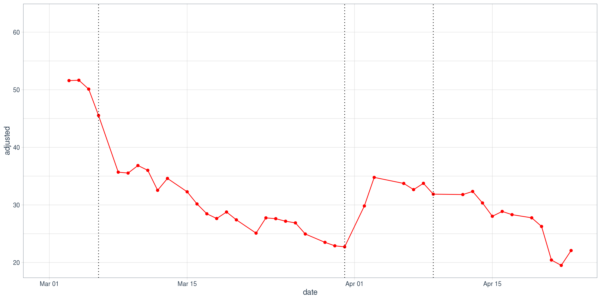
In any case, the sharp fall in Brent futures prices in early March may be attributed to the Russia-OPEC feud, and the rebound in early April may be due to news about talks of slashing production by 20 million barrels per day. After that, Brent experienced a significant drop because of fear around April expiration and physical delivery of oil (West Texas Intermediate actually went negative).
While this price war was certainly caused by a fall in demand due to COVID-19, it’s important to keep this information in mind moving forward.
Oh, and we should probably know how much Brent fell at its worst.
(min(Brent$close) - max(Brent$close)) / max(Brent$close)
## [1] -0.6892925
Down -69%? Not good.
COVID-19 and Brent Crude Oil
Global <-
Global %>%
mutate(confirmed_delta = (confirmed/lag(confirmed)-1)*100,
deaths_delta = (deaths/lag(deaths)-1)*100,
recovered_delta = (recovered/lag(recovered)-1)*100)
Brent <-
Brent %>%
mutate(close_delta = (close/lag(close)-1)*100)
Global %>%
left_join(Brent %>% select(date, close_delta), by = c('date'='date')) %>%
slice(-1) %>% # Get rid of first row, since it's all lagged NA
select(date, confirmed_delta, deaths_delta, recovered_delta, close_delta) %>%
pivot_longer(cols=c("confirmed_delta", "deaths_delta", "recovered_delta", "close_delta"),
names_to="delta_type",
values_to="delta_value") %>%
ggplot(aes(x=delta_value)) +
geom_boxplot(aes(color = delta_type)) +
geom_density(aes(color = delta_type)) +
facet_wrap(~delta_type)
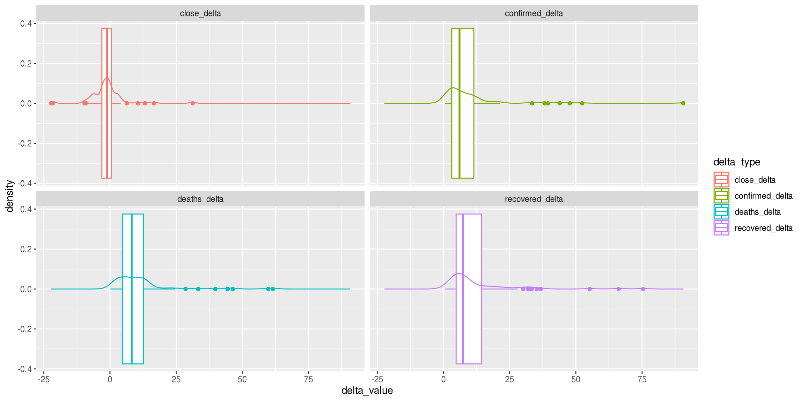
While comparing the distribution of percent change between Brent Crude close prices, confirmed cases, deaths and recovered cases, nothing noteworthy jumps out.
COVID19 %>%
filter(country.region=="Italy") %>%
left_join(Brent %>% select(date, close), by = c('date'='date')) %>%
mutate(close = close * 2000) %>%
ggplot(aes(date)) +
geom_area(aes(y=confirmed), fill="blue", alpha = 0.5) +
geom_area(aes(y=close), fill="red", alpha = 0.5) +
geom_vline(aes(xintercept = mdy("2-29-2020")),linetype=3) +
ylab("Italy COVID-19 v. Brent Crude")
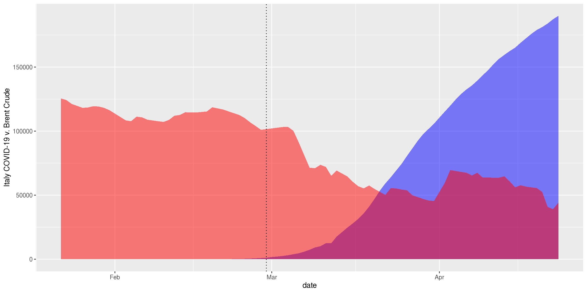
In this more basic graph, we have blue COVID-19 cases in Italy compared to the red Brent Crude close prices (multiplied by 2000—only need to see the general pattern). The sharpest decline occurred when Italy’s cases began to increase, which may not be related, but Italy’s seen as the first significant foray of COVID-19 into the Western hemisphere.
EDA: Projections
When modeling populations and growth, the logistic growth model becomes very handy. In the following examples, we will first use Hubei, China as an example of how the logistic growth model matches up with our data, and then project values for Italy and US. We’ll also see how the data matches with Brent.
logistic_model = function(xvariable, yvariable, asym, df) {
#xvar <- enquo(xvar)
#yvar <- enquo(yvar)
let(
c(xvar=xvariable, yvar=yvariable),
{
start <- coef(lm(logit(yvar / 100) ~ xvar, data = df))
nls_model <- nls(yvar ~ phi1 / (1 + exp(-(phi2 + phi3 * xvar))),
start = list(phi1 = asym, phi2 = start[[1]], phi3=start[[2]]),
data = df)
rss <- sum(residuals(nls_model)^2)
tss <- sum((df$yvar - mean(df$yvar))^2)
r2 <- abs(tss-rss)/tss # Calculation of r^2
}
)
# Values for the logistic growth model
phi1 <- coef(nls_model)[1]
phi2 <- coef(nls_model)[2]
phi3 <- coef(nls_model)[3]
# Get x value range
x <- c(min(df[xvariable]):(max(df[xvariable])+50))
# Construct model return values and return the resulting data frame
y <- phi1 / (1 + exp(-(phi2 + phi3 * x)))
return(list(data.frame(x, y), r2))
}
The function above is inspired by the logistic growth model example by Brian Cheng.
Hubei, China
brent_graph <-
Brent %>%
mutate(datediff = as.numeric(date - mdy("1-22-2020"))) %>%
ggplot(aes(datediff, close)) +
geom_line() +
labs(x='Days Since 1-22-2020', y='Brent Futures Close Price') +
theme_minimal()
Hubei <-
COVID19 %>%
filter(province.state=="Hubei") %>%
mutate(datediff = as.numeric(date - mdy("1-22-2020")))
# See function definition above.
hubei_logit <- logistic_model("datediff", "confirmed", 100000, Hubei)
hubei_graph <-
Hubei %>%
ggplot(aes(datediff, confirmed))+
geom_point(color='blue') +
labs(x='Days Since 1-22-2020', y='Confirmed Cases')+
geom_line(data=hubei_logit[[1]], aes(x, y)) +
geom_vline(aes(xintercept=0), linetype = 3) +
geom_vline(aes(xintercept=40), linetype = 3) +
xlim(0, 60) +
theme_minimal()
plot_grid(hubei_graph,
brent_graph +
geom_vline(aes(xintercept=0), linetype = 3) +
geom_vline(aes(xintercept=40), linetype = 3) +
xlim(0, 60))
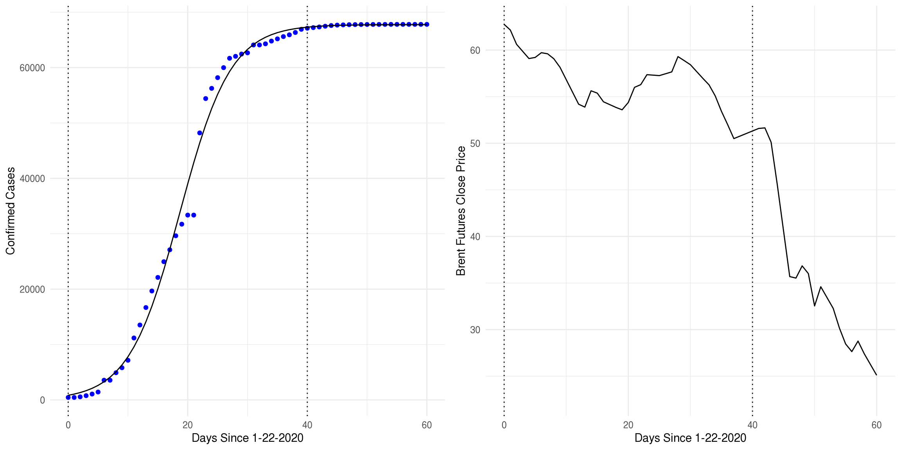
This Hubei examples exists to show that the logistic growth model seems to fit COVID-19 confirmed cases over time well—visually, at least. Let’s check that it actually works.
hubei_logit[[2]]
## [1] 0.9953621
That’s a beautiful r-squared value.
Interestingly, there is little effect on the Brent Crude price, since in the range where the cases grew the most, there was almost no net change in Brent Crude up to day 30 (since the prices rebounded) and then began to dip as cases in China began to stabilize. Yes, there is a significant dip, but that came after the majority of the growth in Chinese cases. So what did affect the oil price?
Italy
Italy <-
COVID19 %>%
filter(country.region=="Italy") %>%
mutate(datediff = as.numeric(date - mdy("1-22-2020")))
italy_logit <- logistic_model("datediff", "confirmed", 10000000, Italy)
italy_graph <-
Italy %>%
ggplot(aes(datediff, confirmed))+
geom_point(color='blue') +
labs(x='Days Since 1-22-2020', y='Confirmed Cases') +
geom_line(data=italy_logit[[1]], aes(x, y)) +
geom_vline(aes(xintercept=37.5), linetype=3) +
geom_vline(aes(xintercept=90), linetype=3) +
xlim(0, 120) +
theme_minimal()
plot_grid(italy_graph, brent_graph + geom_vline(aes(xintercept=37.5), linetype=3))
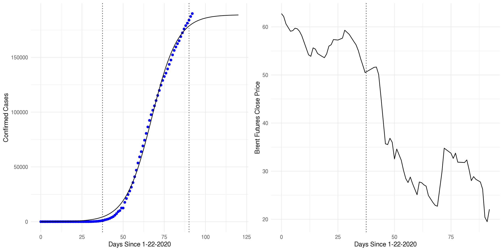
italy_logit[[2]]
## [1] 0.9972323
On a more fundamental level, Italy was the first indication of how much of an impact the coronavirus would have on the Western world, which sent a lot of markets into a frenzy. The dashed line indicates the day that cases began picking up, and we also observe that prices began dropping rapidly. Once again, we make the clarification that the Russia-OPEC price war drove those prices to the ground, but Italy was the sign that things were going to be bad.
Back to real statistics now. The r-squared value is indeed high, but some may be dissuaded by the divergence of the model’s projections from the last recorded value of confirmed cases in Italy. From there, we turn to the logarithmically-scaled values to double-check.
Italy %>%
ggplot(aes(datediff, confirmed)) +
geom_line(color="blue") +
scale_y_log10() +
geom_line(data=italy_logit[[1]], aes(x, y), color="red") +
theme_minimal()
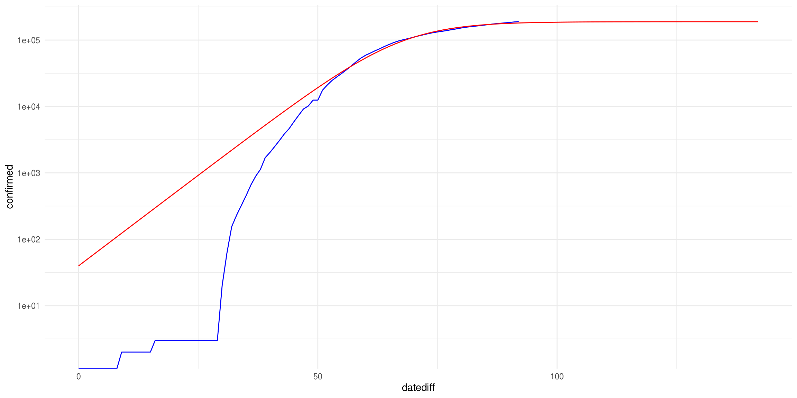
And the tail of the recorded cases almost perfectly matches the curve of the logistic model projections, which is a good sign. However, this model assumes a few key things that we’ll discuss later.
US
America <-
COVID19 %>%
filter(country.region=="US") %>%
mutate(datediff = as.numeric(date - mdy("1-22-2020")))
us_logit <- logistic_model("datediff", "confirmed", 150000000, America)
us_graph <-
America %>%
ggplot(aes(datediff, confirmed))+
geom_point(color='blue') +
labs(x='Days Since 1-22-2020', y='Confirmed Cases') +
geom_line(data=us_logit[[1]], aes(x, y)) +
geom_vline(aes(xintercept=50), linetype=3) +
geom_vline(aes(xintercept=78), color = "lightblue") +
geom_vline(aes(xintercept=105), linetype=3) +
xlim(40, 120) +
theme_minimal()
plot_grid(us_graph, brent_graph + geom_vline(aes(xintercept=78), color="lightblue") + xlim(40, 95))
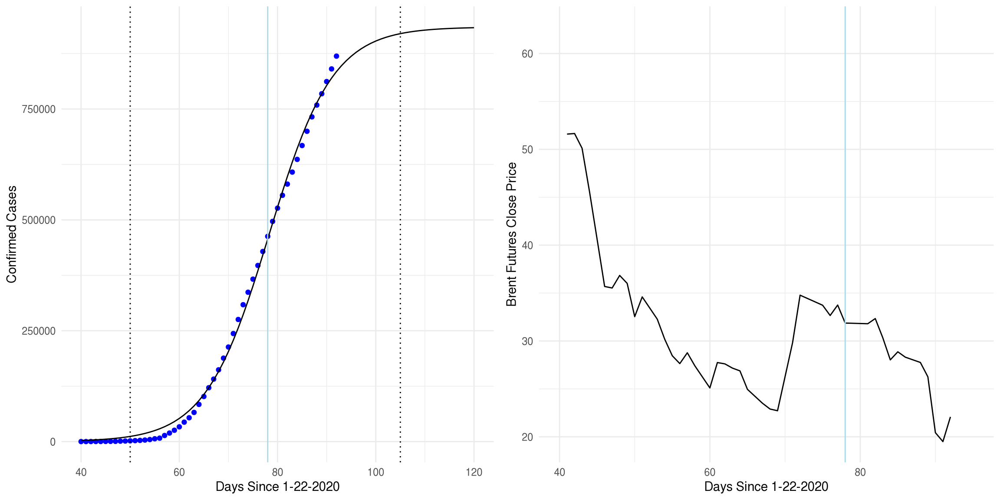
us_logit[[2]]
## [1] 0.9982094
The r-squared value is great, but again, we’ll talk about assumptions and dangers soon.
Based on this model, we’ll expect a plateau to come around the 105th day, or…
mdy("1-22-2020") + 105
## [1] "2020-05-06"
So essentially, the beginning of May.
Looking at the comparison betweeen America and Brent Crude futures prices, while the downfall of Brent did occur during the rise of cases in America, we still keep in mind that the fall was driven a lot by the price war in Saudi Arabia and Russia. That being said, the skyrocketing cases in America most likely did play a role in the fall of Brent crude oil because of the financial superpower in the country.
Warnings
The logistic model has a few important assumptions:
- All reported cases are accurate of all coronavirus cases in the respective countries
- The status quo will not change (in this case, social distancing and stay-at-home orders)
- No fundamental changes in news or events occur
With the exception of the first point, the assumptions aren’t very feasible. People are moving constantly, and the push to reopen countries like America is loud and clear, which would ruin the model by allowing the carrying capacity to jump up significantly. The third point is impossible to maintain.
While these assumptions are important to keep in mind, the overall effectiveness of the projections may be off by two weeks to a month
In any case, once the time comes, we want to see what happens to Brent Crude after demand resumes to normal levels.
Global
The logistic model is a little difficult to use in this case because of nonlinear parameter estimation, so we’ll use the classic smoother instead.
global_graph <-
Global %>%
mutate(datediff = as.numeric(date - mdy("1-22-2020"))) %>%
pivot_longer(cols=c(confirmed, deaths, recovered), names_to="type", values_to="count") %>%
ggplot(aes(date, count, color=type))+
geom_point() +
geom_smooth(span = 0.5) +
labs(x='Days Since 1-22-2020', y='Confirmed Cases') +
theme_minimal()
plot_grid(global_graph, brent_graph)
## `geom_smooth()` using method = 'loess' and formula 'y ~ x'
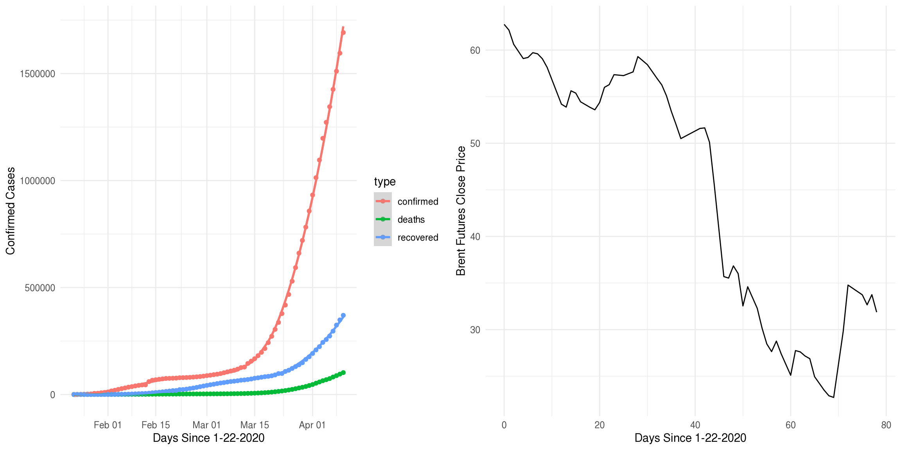
A normal stat smooth seems to overfit the data. The confidence bands are “missing” because they’re actually so tiny that you can’t see them—another bad sign of overfitting the data.
Global %>%
mutate(datediff = as.numeric(date - mdy("1-22-2020"))) %>%
pivot_longer(cols=c(confirmed, deaths, recovered), names_to="type", values_to="count") %>%
ggplot(aes(date, count, color=type))+
geom_point() +
# This is an insane confidence level, yet the bands are just barely visible.
geom_smooth(span = 0.5, level=0.999999999999999) +
labs(x='Days Since 1-22-2020', y='Confirmed Cases') +
theme_minimal() +
scale_y_log10()
## `geom_smooth()` using method = 'loess' and formula 'y ~ x'
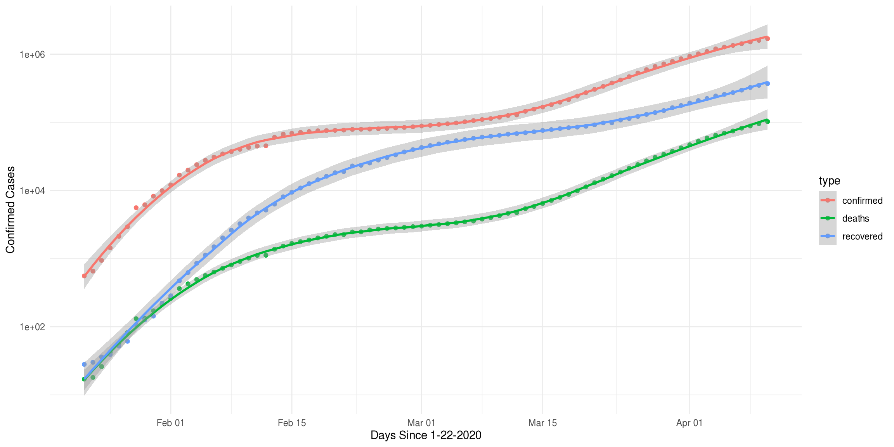
Even on a logarithmic scale, the problem is still there.
Conclusion
Recall that our original guiding question revolves around the analysis of effects of COVID-19 cases on Brent crude oil futures prices.
We’ve examined historical data from COVID-19 recorded cases and Brent crude oil futures prices. From our analysis, we can see that Brent fell 69% at its worst point as COVID-19 confirmed cases around the world climbed higher and higher. Fundamentally, this can be explained by a severe demand crash in oil as people stopped traveling and stayed at home instead. We also know that the Russia-OPEC price war severely affected the confidence in Brent as they began ramping up production instead of cutting it, and the April expiration date again tanked oil prices.
Statistically, we want to project how COVID-19 will affect the world in the near future. To that end, we used the logistic growth model to model our confirmed cases, well-known for its basic ability to model population growth (in this case, confirmed COVID cases). First, we showed its fit on Hubei data, which had an extremely high r-squared value, and oil prices began showing signs of dropping. Then we have Italy, the first serious foray of COVID-19 into the Western world, and the United States. In the period where Italian cases were beginning to severely rise, oil prices began to drop rapidly, and the trend continued in almost a staircase pattern once cases in the United States began rising rapidly.
However, there’s going to be an end to all of the cases. Italy, six weeks into quarantine, seems to be reaching its peak soon, while America will follow in the beginning of May. These dates are off by few weeks because of the assumptions, but once those numbers begin stabilizing (approach the asymptote of the logistic model’s asymptote), we may see Brent crude oil prices stabilize and bottom out.
It’s important to note the limitations of the logistic growth model used in projections. The most important one is the assumption of stasis in conditions used in coronavirus prevention—namely, social distancing. If we were to resume normal conditions prematurely, the logistic growth model used here would no longer apply, since the carrying capacity would suddenly increase as more virus exposure becomes possible.
The model also heavily relies on accurate data reporting by global health organizations, as they are the ones providing the data (compiled by Johns Hopkins). This doesn’t necessarily mean that they are purposefully lowering the numbers, but that there are other unreported cases by people who do not go to the appropriate healthcare infrastructure, or simply not classified as infected yet.
In any case, we conclude that the rise of the coronavirus since January has severely affected Brent crude oil futures prices, mixed in with current events and investor confidence, because of lack of demand. We also see a lot of influence over the price based on emerging cases in Italy and America; however, a statistically accurate model on the effects of COVID-19 on Brent Crude oil prices is difficult to create because of the influence of current events on the market.